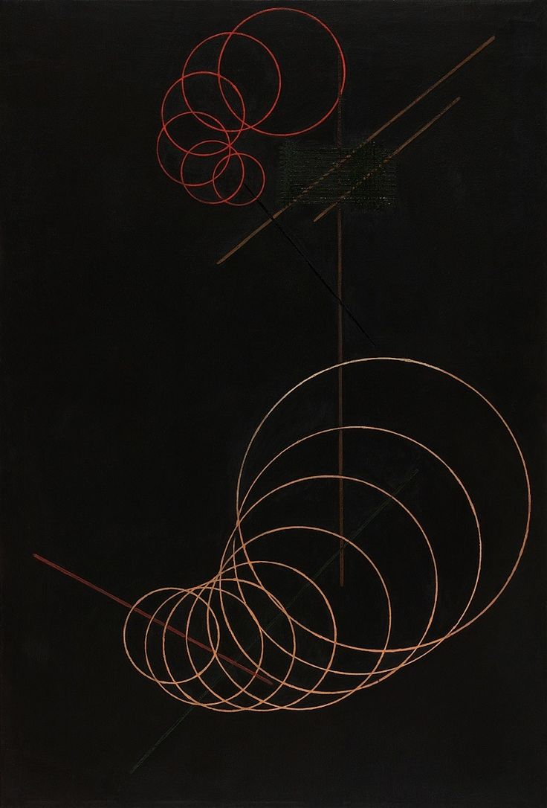

Linearism, Aleksandr Rodchenko 1920

PhD Student
UW-Madison
Structure, Subject, Shape
researching the legacy of structuralism and rationalism, theories of abstraction, history of the human sciences, semiotics, psychoanalysis, historical epistemology, humanism, the gothic, and environmental humanities
philosophy of the concept vs. philosophies of life
Cade Olmstead
Doctoral Fellow, Department of English, University of Wiconsin-Madison
Philosophy & Literature
Literary Theory
Intellectual History
Science Studies / Environmental Humanities
cmolmstead[at]wisc.edu
Education
PhD (Literary Studies), University of Wisconsin-Madison | 2023-Present
MA (English), University of Vermont | 2021-2023
Thesis: The Crypt of Being: On the Gothic Sensibility of Reason
BA (Philosophy & Sociology, magna cum laude), University of Northern Iowa | 2016-2020
Teaching & Research
Graduate Teaching Assistant (English, instructor of record, 6 courses) | 2021-2023
Visiting Researcher (U.S. Fulbright), Institute of Philosophy ZRC-SAZU and the University of Ljubljana | 2020-2021
Undergraduate Research Fellow, College of Social and Behavioral Sciences | 2018
Research Assistant, Center for Social and Behavioral Research, University of Northern Iowa | 2017-2020
Administrative Intern, Iowa Department of Commerce | 2017
Page, Iowa State Senate | 2016
Peer-Reviewed Publications
Olmstead, Cade M. "In the Court of the Jester: On Comedy and Democracy." Demos vs. Polis?: Essays on Civic Responsibility and Participation, edited by James Griffith and Dagmar Kusa, Kritika & Kontext, 2019, pp. 142-147.
Conference Presentations
Panel paper (Chair). "The Crypt of Being: The Gothic Sensibility of Reason." LACK iv: Psychoanalytic Theory in 2023, LACK, University of Vermont. (April 20-22, 2023)
Panel paper. "Can a Father Kill? Psychic Debts and the Imaginary Father." Midwest Popular Culture Association, DePaul University. (October 14-16, 2023)
Panel paper. "History on the Couch: Historicism and its Failures." The (In)efficacy of Literature, Graduate Student Symposium, Department of English, University of Vermont. (April 8, 2022)
Poster presentation. "Hegelian Political Theater." 14th Annual Research in the Capitol, Iowa Regents Universities. (April 1, 2019)
Panel paper. "In the Court of the Jester: On Comedy and Democracy." Demos vs. Polis Liberal Herald Conference, Bratislava International School of Liberal Arts. 2nd place finalist. (November 22-23, 2018)
Panel paper. "Tom and Jerry: Performative Queerness in Action." Midwest Undergraduate Conference in the Humanities, Wartburg College. (November 3, 2018)
Technical Reports
Ki H. Park, Mary E. Losch, Rodney Muilenburg, Abigail Cobb, Cade Olmstead, and Erin Heiden. "2018 Iowa Gambling Treatment Outcomes System: C. Six Month Follow-Up Report." Cedar Falls, Iowa: Center for Social and Behavioral Research, 2018. Prepared for the Iowa Department of Public Health. (2018)